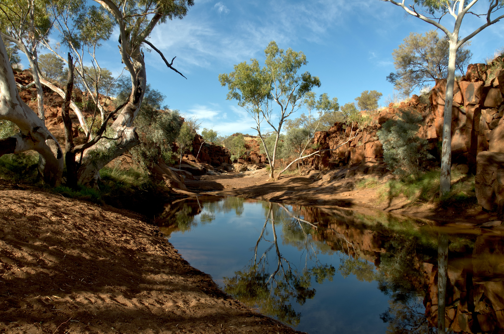

Please select an environment


Black Cockatoo: Billerbeck, M. (2019). Red-tailed black Cockatoo or Banksian Black Cockatoo (Calyptorhynchus banksii) [Image]. Retrieved 21 October 2021, from https://www.youtube.com/watch?v=U1lUkBQFTDo.
Kangaroo: Secret Planet. (2020). Wild kangaroos in the woods #2 | Australian Wildlife 4K [Video]. Retrieved 21 October 2021, from https://www.youtube.com/watch?v=HHsqc0TAw8g.
Koala: Cassette. (2021). Cute Koala Bear And Relaxing Music, 4K Ultra HD | Marvelboss [Video]. Retrieved 21 October 2021, from https://www.youtube.com/watch?v=IztD4lWQP9U.
Dingo: Nat Geo WILD. (2010). Dingo Fast Food | Nat Geo Wild [Video]. Retrieved 21 October 2021, from https://www.youtube.com/watch?v=AWEQKLCqSRI.
Crocodile: Smithsonian. (2015). Astounding Facts about Crocodile Eyes [Video]. Retrieved 21 October 2021, from https://www.youtube.com/watch?v=QSMw3adYh2Y.
Background image: Bezanger, J. (2021). Image of Outback environment [Image]. Retrieved 21 October 2021, from https://unsplash.com/photos/7TQOTyZ8rXo.
Black Cockatoo: Jean and Fred. (2017). Red-Tailed Black-Cockatoos [Image]. Retrieved 21 October 2021, from https://www.flickr.com/photos/63479603@N00/32638173665.
Kangaroo: John. (2007). Kangaroo at Australia Zoo-02+ [Image]. Retrieved 21 October 2021, from https://www.flickr.com/photos/34534185@N00/1928593646.
Koala: Lance, C. (2008). Drunken Koala? Sydney, AU [Image]. Retrieved 21 October 2021, from https://www.flickr.com/photos/91673635@N00/2954294032.
Dingo: Fraser-Smith, S. (2009). Canis lupus dingo [Image]. Retrieved 21 October 2021, from https://www.flickr.com/photos/8379434@N07/3636177151.
Crocodile: Bendon, J. (2014). fresh water crocodile [Image]. Retrieved 21 October 2021, from https://www.flickr.com/photos/77524419@N03/14804772621.
Black Cockatoo sound: Birds of the Huon Tasmania. (2017). Yellow Tailed Black Cockatoo call [Online]. Retrieved 22 October 2021, from https://www.youtube.com/watch?v=taN-TOkHkRQ.
Kangaroo sound: The Animal Sounds. (2020). Kangaroo noise - see how do kangaroos communicate � Kangaroo sounds and noises. [Online]. Retrieved 22 October 2021, from https://www.youtube.com/watch?v=Nk0CVdhn-ps&t=19s.
Koala sound: All Things Australia. (2020). Koala Call [Online]. Retrieved 22 October 2021, from https://www.youtube.com/watch?v=CMwAgft_kZ8.
Dingo sound: Dee F. (2013). Dingo Pack Howling [Online]. Retrieved 22 October 2021, from https://www.youtube.com/watch?v=cWpq8z3gTqQ.
Crocodile sound: Sound Effects. (2020). Crocodile Sound Effect [Online]. Retrieved 22 October 2021, from https://www.youtube.com/watch?v=JpvsFKc7EEA.
Background Image: Nilov, M. (2021). Woman in Red Dress Standing on Green Plants [Image]. Retrieved 21 October 2021, from https://www.pexels.com/photo/wood-landscape-nature-red-7682993/.
Cassowary: Smith, R. (2012). "the world's most dangerous bird" [Image]. Retrieved 21 October 2021, from https://www.flickr.com/photos/wodjamiff/7459595882/in/photostream/.
Lace Monitor: Gavins, S. (2009). Lace Monitor - Bell's Form. On the Fraser Coast in Queesland Australia. [Image]. Retrieved 21 October 2021, from https://commons.wikimedia.org/wiki/File:Lace_Monitor_-_Bell%27s_Form_-_Fraser_Coast._Queensland._Australia.JPG.
Tree Kangaroo: WorldAtlas. (2018). Tree Kangaroo sitting in a tree [Image]. Retrieved 21 October 2021, from https://www.worldatlas.com/articles/tree-kangaroo-facts-animals-of-oceania.html.
Whip Bird: McCauley, B. Whip Bird On Branch [Image]. Retrieved 21 October 2021, from https://www.birdnote.org/listen/shows/australias-rainforest-birds.
Brown Tree Snake: Kirillov, P. (2012). Bogani Nani Wartabone National Park [Image]. Retrieved 21 October 2021, from https://commons.wikimedia.org/wiki/File:Brown_tree_snake_(Boiga_irregularis)_(8387580552).jpg.
Background Ambient Sound: SongCast, Inc. (2016). Rainforest Sounds [Online]. Retrieved 21 October 2021, from https://www.youtube.com/watch?v=EXHSEEi9iFw.
Cassowary Sound: Wild Ambience. Southern Cassowary Calls [Online]. Retrieved 21 October 2021, from https://wildambience.com/wildlife-sounds/southern-cassowary/.
Whip Bird Sound: Wild Ambience. Eastern Whipbird Sounds [Online]. Retrieved 21 October 2021, from https://wildambience.com/wildlife-sounds/eastern-whipbird/.
Cassowary: BBC Earth. (2021). Giant Cassowaries are Modern-day Dinosaurs | Seven Worlds, One Planet | BBC Earth [Video]. Retrieved 21 October 2021, from https://www.youtube.com/watch?v=mb1bbIyF9OU.
Lace Monitor: Auckland Zoo. (2017). Zoo Tales - Large and beautiful lace monitors [Video]. Retrieved 21 October 2021, from https://www.youtube.com/watch?v=qsoQhfI9H38.
Tree Kangaroo: Nat Geo WILD. (2017). Kangaroos...in Trees? | Paradise Islands [Video]. Retrieved 21 October 2021, from https://www.youtube.com/watch?v=4ws4g72nsxw.
Whip Bird: Plumes of Oz. (2020). Eastern Whipbird [Video]. Retrieved 21 October 2021, from https://www.youtube.com/watch?v=6ZktmKEHD3A.
Brown Tree Snake: reptiworksaquatics. (2020). Do Brown Tree Snakes Make Good Pets [Video]. Retrieved 21 October 2021, from https://www.youtube.com/watch?v=N0v0j_3m8NA.
Cassowary: Yhamdee, A. Southern Cassowary [Image]. Retrieved 21 October 2021, from http://www.zoothailand.org/en/animal_view.php?detail_id=225&c_id=.
Foliage PNG 1: Png Egg. Leafy Plant, green leafed plant, png [Image]. Retrieved 21 October 2021, from https://www.pngegg.com/en/png-fzzdr.
Foliage PNG 2: PikPng. Tropical Bush Png - Non Flowering Plants Png Clipart [Image]. Retrieved 21 October 2021, from https://www.pikpng.com/pngvi/hxTxRR_tropical-bush-png-non-flowering-plants-png-clipart/.
Foliage PNG 3: FreePNG.es. Fern PNG [Image]. Retrieved 21 October 2021, from https://www.freepng.es/png-jil5lh/.
Foliage PNG 4: Clipart Library. http://clipart-library.com/clip-art/bush-transparent-png-23.htm [Image]. Retrieved 21 October 2021, from http://clipart-library.com/clip-art/bush-transparent-png-23.html.
Tree Kangaroo: National Geographic. Tree Kangaroo eating on black background [Image]. Retrieved 21 October 2021, from https://www.nationalgeographic.org/projects/photo-ark/animal/dendrolagus-goodfellowi/.
Foliage PNG 1: Besgrow. Staghorn Fern on wall [Image]. Retrieved 21 October 2021, from https://besgrow.com/how-to-grow-a-wall-mounted-staghorn-fern/.
Foliage PNG 2: johnmuir2013. (2013). Tree branch with foggy background [Image]. Retrieved 21 October 2021, from https://johnmuir1000milejourney.wordpress.com/2013/09/13/journey-from-my-garden-gate/.
Foliage PNG 3: prastagenie. (2020). Png Bush 2 By Moonglowlilly D5tk5ol [Image]. Retrieved 21 October 2021, from https://www.deviantart.com/prastagenie/art/Png-Bush-2-By-Moonglowlilly-D5tk5ol-840708532.
Foliage PNG 4: Rossler, L. (2017). Spanish Moss Clip Art PNG [Image]. Retrieved 21 October 2021, from https://favpng.com/png_view/liane-rossler-spanish-moss-clip-art-png/mS0JcKaq.
Whip Bird: McCauley, B. Whip Bird On Branch [Image]. Retrieved 21 October 2021, from https://www.birdnote.org/listen/shows/australias-rainforest-birds.
Foliage PNG 1: Pexels. (2019). Green Leafed Plant [Image]. Retrieved 21 October 2021, from https://www.pexels.com/photo/green-leafed-plant-2563742/.
Foliage PNG 2: Shaffer, E. (2019). Pink and White Flower With White Background [Image]. Retrieved 21 October 2021, from https://www.pexels.com/photo/pink-and-white-flower-with-white-background-2512281/
Foliage PNG 3: Undvari, L. Green Leaves PNG Image [Image]. Retrieved 21 October 2021, from https://www.pngitem.com/middle/mxiiTJ_green-leaves-png-image-high-definition-leaf-png/.
Foliage PNG 4: VINOD, A. (2017). Green Leaf Photography [Image]. Retrieved 21 October 2021, from https://www.pexels.com/photo/green-leaf-photography-691043/.
Download Free 3D model dry leaves: Mikhail Sizov. Cgtricks. (2019, April 10). Retrieved October 19, 2021, from https://cgtricks.com/download-free-3d-model-dry-leaves-mikhail-sizov/.
Lace Monitor: Australian Reptiles & Animals. Auckland Zoo. (n.d.). Retrieved October 10, 2021, from https://www.aucklandzoo.co.nz/animals/lace-monitor.
Waterfalls in forest · Free Stock Photo - PEXELS. (n.d.). Retrieved October 19, 2021, from https://www.pexels.com/photo/waterfalls-in-forest-460621/.
Australia, the Outback. Wanderlust. (n.d.). Retrieved October 19, 2021, from https://www.wanderlust.co.uk/destinations/australia-the-outback/.
Brown Field and Blue Sky · free stock photo - PEXELS. (n.d.). Retrieved October 19, 2021, from https://www.pexels.com/photo/brown-field-and-blue-sky-46160/.
Brown Kangaroo on Green Grass Field. (n.d.). Retrieved October 19, 2021, from https://www.pexels.com/photo/wood-nature-jumping-animal-6704257/.
The colours of the Outback. Australia. (n.d.). Retrieved October 19, 2021, from https://www.touringaustralia.de/RedCentre/Outback.php.
Crocodile (noun) definition and synonyms: Macmillan Dictionary. CROCODILE (noun) definition and synonyms | Macmillan Dictionary. (n.d.). Retrieved October 19, 2021, from https://www.macmillandictionary.com/dictionary/british/crocodile.
Eucalyptus marginata. Benara Nurseries. (n.d.). Retrieved October 19, 2021, from https://www.benaranurseries.com/eucalyptus-marginata.
Growing Lemon Eucalyptus – How To Care For Lemon Eucalyptus. StackPath. (n.d.). Retrieved October 19, 2021, from https://www.gardeningknowhow.com/ornamental/trees/eucalyptus/growing-lemon-eucalyptus.html.
Koala bear resting on a tree branch · Free Stock Photo. (n.d.). Retrieved October 19, 2021, from https://www.pexels.com/photo/koala-bear-resting-on-a-tree-branch-1770705/.
MediLexicon International. (n.d.). Eucalyptus: What are the health benefits? Medical News Today. Retrieved October 19, 2021, from https://www.medicalnewstoday.com/articles/266580#eucalyptus_health_benefits.
Photo of Green Forest · free stock photo - pexels.com. (n.d.). Retrieved October 19, 2021, from https://www.pexels.com/photo/photo-of-green-forest-2743908/.
Scenic view of waterfalls · Free Stock Photo - PEXELS. (n.d.). Retrieved October 19, 2021, from https://www.pexels.com/photo/scenic-view-of-waterfalls-1598073/.
Wikimedia Foundation. (2021, October 12). Kangaroo. Wikipedia. Retrieved October 23, 2021, from https://en.wikipedia.org/wiki/Kangaroo.
View of the lunette, Mungo National Park, New South Wales, Australia. Alamy. (n.d.). Retrieved October 23, 2021, from https://www.alamy.com/stock-photo/mungo-national-park.html.
Wikimedia Foundation. (2021, October 18). Dingo. Wikipedia. Retrieved October 23, 2021, from https://en.wikipedia.org/wiki/Dingo#/media/File:Dingo_walking.jpg.
Wikimedia Foundation. (2021, September 26). Red-tailed black cockatoo. Wikipedia. Retrieved October 23, 2021, from https://en.wikipedia.org/wiki/Red-tailed_black_cockatoo#/media/ File:Redcocky-male.jpg.
Vase with exotic banksia flowers · Free Stock Photo - PEXELS. (n.d.). Retrieved October 23, 2021, from https://www.pexels.com/photo/vase-with-exotic-banksia-flowers-4039443/.
Green trees near city buildings · Free Stock Photo. Pexels.com. (n.d.). Retrieved October 23, 2021, from https://www.pexels.com/photo/green-trees-near-city-buildings-4542604/.
Close-up photo of Grass · Free Stock Photo - PEXELS. (n.d.). Retrieved October 23, 2021, from https://www.pexels.com/photo/close-up-photo-of-grass-2403929/.
Wikimedia Foundation. (2021, October 7). Brown Tree Snake. Wikipedia. Retrieved October 23, 2021, from https://en.wikipedia.org/wiki/Brown_tree_snake#/media/ File:Boiga_irregularis_coiled.jpg.
Photo of fern plants · Free Stock Photo - PEXELS. (n.d.). Retrieved October 23, 2021, from https:// www.pexels.com/photo/photo-of-fern-plants-2757549/.
Water falls in the middle of the forest · Free Stock Photo. (n.d.). Retrieved October 23, 2021, from https://www.pexels.com/photo/water-falls-in-the-middle-of-the-forest-3836292/.
Water falls in the middle of the forest · Free Stock Photo. (n.d.). Retrieved October 23, 2021, from https://www.pexels.com/photo/water-falls-in-the-middle-of-the-forest-3836292/.
Wikimedia Foundation. (2021, October 7). Brown Tree Snake. Wikipedia. Retrieved October 23, 2021, from https://en.wikipedia.org/wiki/Brown_tree_snake.
Wikimedia Foundation. (2021, September 13). Bennett's tree-kangaroo. Wikipedia. Retrieved October 23, 2021, from https://en.wikipedia.org/wiki/Bennett%27s_tree-kangaroo.
Wikimedia Foundation. (2021, October 13). Lace Monitor. Wikipedia. Retrieved October 23, 2021, from https://en.wikipedia.org/wiki/Lace_monitor.
Wikimedia Foundation. (2021, April 14). Eastern whipbird. Wikipedia. Retrieved October 23, 2021, from https://en.wikipedia.org/wiki/Eastern_whipbird.
Wikimedia Foundation. (2021, October 18). Dingo. Wikipedia. Retrieved October 23, 2021, from https://en.wikipedia.org/wiki/Dingo.
Wikimedia Foundation. (2021, September 18). Crocodile. Wikipedia. Retrieved October 23, 2021, from https://en.wikipedia.org/wiki/Crocodile.
Wikimedia Foundation. (2021, September 26). Red-tailed black cockatoo. Wikipedia. Retrieved October 23, 2021, from https://en.wikipedia.org/wiki/Red-tailed_black_cockatoo.
Wikimedia Foundation. (2021, September 26). Red-tailed black cockatoo. Wikipedia. Retrieved October 23, 2021, from https://en.wikipedia.org/wiki/Red-tailed_black_cockatoo.
Wikimedia Foundation. (2021, October 12). Kangaroo. Wikipedia. Retrieved October 23, 2021, from https://en.wikipedia.org/wiki/Kangaroo.
Riegal, R. (2020). Part of Weeli Wolli Creek a billabong in Western Australia. This is in April heading into winter; best time of year as it doesn't get too hot (in summer 49C/120F). Near the mining town of Newman. Could only get here by 4-wheel drive & a short hike. Indigenous Australian rock carvings - upwards to 45,000 years old - on the surrounding rock. Unsplash. Retrieved October 24, 2021, from https://unsplash.com/photos/0VFr6ub7HlA.
Porter, Z. (2020). Unsplash. Retrieved October 24, 2021, from https://unsplash.com/photos/kJWpVcd2rkQ.
Dunn, N. (2020). Only in Australia can you play with Kangaroos on the beach. What a wonderful Experience. Unsplash. Retrieved October 24, 2021, from https://unsplash.com/photos/OzUJa5Q9m1g.
Thornton, J., & Otto, M. (n.d.). Bootstrap. Bootstrap · The most popular HTML, CSS, and JS library in the world. Retrieved October 31, 2021, from https://getbootstrap.com/.
Willison, T. (2021, March 2). JQuery 3.6.0 released! Official jQuery Blog. Retrieved October 31, 2021, from https://blog.jquery.com/2021/03/02/jquery-3-6-0-released/.
Gandy, D. (n.d.). Font awesome. Font Awesome. Retrieved October 31, 2021, from https://fontawesome.com/.
JS Foundation - js.foundation. (n.d.). JQuery UI. Retrieved October 31, 2021, from https://jqueryui.com/.
QLD Wildlife API: https://www.data.qld.gov.au/dataset/qld-wildlife-data-api
Atlas of Living Australia: https://biocache.ala.org.au/search#tab_simpleSearch
Google. (n.d.). Google fonts. Retrieved November 1, 2021, from https://fonts.google.com/specimen/Righteous?query=Righteous%2B.
Google. (n.d.). Google fonts. Retrieved November 1, 2021, from https://fonts.google.com/specimen/Montserrat?query=mon.
Our assigned team name is Angler, it consists of:
The website is intended as a didactic tool for the audiences to gain knowledge and information about the unique ecosystems and wildlife Queensland has on display. The goal is to make people more aware of these animals, information like their features, habitat and their current conservation status. By using API sources from the Queensland Government we could build a more emmersive user experience for target audiences.
We aim for late primary school to early high school kids and young families that come to explore Australia.
The website can only be experienced with screen size of 1920×1080.